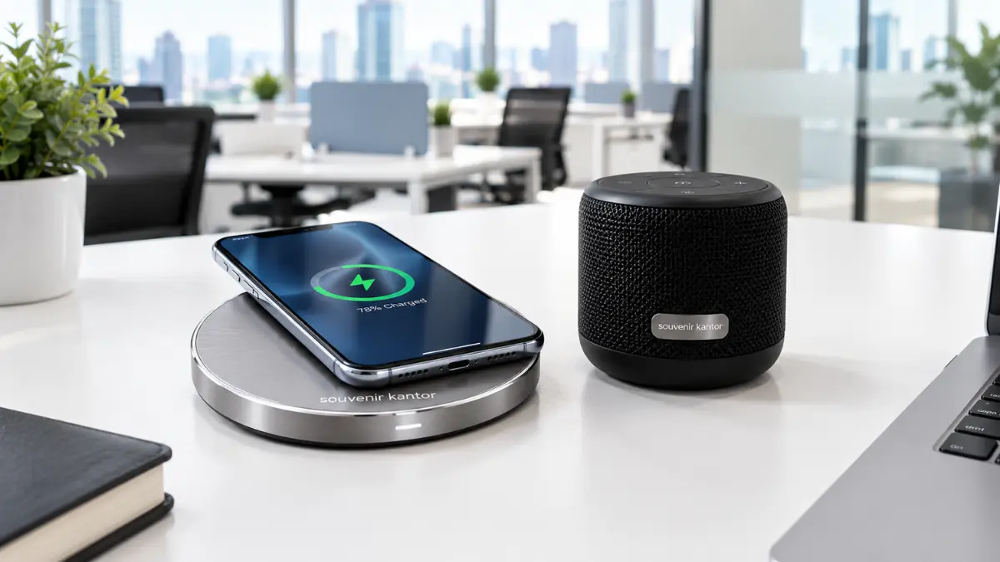

10+ Gift Set Eksklusif untuk Klien VIP Perusahaan
 Arinda Zakia (rnd)
11 September 2026
5 Menit Baca
Arinda Zakia (rnd)
11 September 2026
5 Menit Baca

Souvenir Kantor Jakarta - Gift set perusahaan untuk klien adalah paket suvenir premium yang diberikan kepada mitra bisnis atau klien penting sebagai simbol penghargaan dan penguatan hubungan kerja sama jangka panjang. Memilih material bermutu tinggi seperti kulit asli, logam berukir, dan teknologi mutakhir menjaga prestise serta kredibilitas perusahaan pemberi di mata para pemangku kepentingan bisnis.
Gift set perusahaan untuk klien adalah paket suvenir premium yang diberikan kepada mitra bisnis atau klien penting sebagai simbol penghargaan dan penguatan hubungan kerja sama jangka panjang. Item yang dipilih biasanya bernuansa eksklusif seperti alat tulis eksekutif, aksesoris kulit, hingga perlengkapan kerja bermaterial premium.
Souvenir Kantor Jakarta menghadirkan pilihan gift set klien yang dirancang untuk mencerminkan profesionalisme perusahaan Anda. Gift set untuk klien harus mencerminkan kelas dan kredibilitas perusahaan pemberi. Material premium seperti kulit asli dan logam menjadi standar utama.
Personalisasi logo dan kemasan meningkatkan kesan eksklusif, sementara item fungsional bernilai tinggi lebih diingat dibanding suvenir generik. Souvenir Kantor Jakarta menyediakan konsultasi desain komprehensif sebelum produksi massal dimulai.
- Standar Kualitas Gift Set untuk Menjaga Relasi Klien Bisnis
- 15 Pilihan Item Custom Eksklusif untuk Klien VIP
- 1. Alat Tulis Eksekutif
- 2. Aksesoris Perjalanan Bisnis
- 3. Lifestyle Premium
- 4. Aksesoris Teknologi Modern
- Rekomendasi Konfigurasi Gift Set Klien VIP Berdasarkan Momen
- Konsultasikan Desain Gift Set Klien Anda Bersama Kami
- Kesimpulan
- FAQ Seputar Gift Set Klien VIP Perusahaan
Standar Kualitas Gift Set untuk Menjaga Relasi Klien Bisnis
Standar kualitas gift set untuk klien bisnis ditentukan oleh pemilihan material premium, ketahanan produk, serta detail finishing yang rapi, karena kualitas rendah dapat menurunkan citra profesional perusahaan di mata mitra kerja sama.
Klien bisnis, terutama yang berada di level eksekutif, direksi, dan manajerial, umumnya sudah terbiasa menerima berbagai jenis suvenir dari banyak rekanan bisnis. Oleh karena itu, gift set yang diberikan perlu memiliki nilai lebih baik dari sisi material, estetika, maupun presentasi visual.
Penggunaan bahan seperti kulit asli, kayu solid pilihan, atau logam stainless steel memberikan kesan tahan lama dan bernilai tinggi dibandingkan plastik atau bahan sintetis biasa. Sentuhan material berkualitas ini merefleksikan penghargaan tulus perusahaan terhadap kemitraan yang terjalin.
Selain material, kemasan turut memengaruhi persepsi penerima secara signifikan. Box eksklusif tipe rigid box dengan finishing rapi, lapisan beludru bagian dalam, ditambah label atau ukiran logo perusahaan, menciptakan pengalaman unboxing yang sangat berkesan. Riset internal industri promotional product menunjukkan bahwa kualitas kemasan sering menjadi faktor penentu utama apakah sebuah hadiah dianggap istimewa atau sekadar formalitas seremonial.
Faktor lain yang perlu diperhatikan adalah relevansi fungsi produk dengan gaya hidup profesional penerima. Klien korporat cenderung lebih menghargai barang yang dapat digunakan secara nyata dalam aktivitas kerja sehari-hari, seperti saat memimpin rapat, melakukan perjalanan bisnis, atau presentasi di hadapan dewan direksi.

15 Pilihan Item Custom Eksklusif untuk Klien VIP
Terdapat beragam pilihan item custom eksklusif yang sangat cocok dijadikan gift set untuk klien, mulai dari alat tulis premium hingga aksesoris kerja bermaterial kulit, yang seluruhnya dapat dipersonalisasi dengan logo perusahaan Anda secara elegan:
1. Alat Tulis Eksekutif
Kategori alat tulis eksekutif menjadi pilihan klasik yang tidak pernah kehilangan relevansi dan selalu dihargai tinggi oleh para profesional bisnis:
- Pulpen Eksekutif Berbahan Logam: Pulpen rollerball bertinta halus dengan sentuhan ukiran grafir laser presisi.
- Leather Notebook Bersampul Kulit: Buku catatan agenda mewah dengan kertas tebal bebas tembus dan finishing logo emboss/deboss emas.
- Tempat Kartu Nama Kulit: Wadah kartu nama berbalut kulit asli yang dipadukan dengan aksen logam anti karat.
- Penggaris Logam Mini & Bookmark Logam: Aksesoris penanda buku berukir halus dengan ketahanan puluhan tahun.
2. Aksesoris Perjalanan Bisnis
Untuk kategori aksesoris perjalanan bisnis, pilihlah produk yang menjadi favorit karena sering digunakan klien saat melakukan dinas ke luar kota maupun perjalanan internasional:
- Tas Laptop Kulit (Executive Leather Briefcase): Tas kerja elegan yang memberikan perlindungan maksimal bagi perangkat kerja berharga.
- Dompet Kartu Premium (Leather Card Holder): Dompet ramping berfitur proteksi RFID untuk keamanan kartu bisnis dan perbankan.
- Travel Organizer Pouch: Tas kecil kompartemen ganda untuk menyimpan paspor, tiket, kabel, dan dokumen penting secara teratur.
- Leather Luggage Tag: Label koper kulit kustom dengan logo perusahaan yang tahan terhadap gesekan bagasi penerbangan.
3. Lifestyle Premium
Kategori lifestyle premium turut melengkapi pilihan gift set klien untuk mendukung kenyamanan kerja sehari-hari:
- Tumbler Kaca dengan Insulasi Ganda: Botol minum kaca borosilikat dengan pelindung silikon atau stainless steel vacuum flask penahan panas dingin.
- Jam Meja Minimalis: Jam meja beraksen kayu solid modern yang mempercantik estetika ruang kerja eksekutif.
- Humidifier Meja Kerja Bergaya Modern: Pelembap udara aromaterapi berdesain kompak yang menjaga kesegaran ruang kerja ber-AC.
- Mug Keramik Matte dengan Tatakan Kayu: Cangkir kopi eksklusif berlogo grafir atau sablon presisi tinggi.
4. Aksesoris Teknologi Modern
Sementara itu, kategori aksesoris teknologi banyak diminati karena sangat relevan dengan dinamika kerja era digital:
- Wireless Charger Custom Logo: Fast-charging pad nirkabel berbahan aluminium atau kayu yang kompatibel dengan berbagai ponsel pintar.
- Portable Speaker Mini: Pengeras suara bluetooth kompak dengan kejernihan audio tinggi dan bodi metal premium.
- Flashdisk Desain Eksklusif: Media penyimpanan data berkapasitas besar dengan balutan kulit atau logam berlogo elegan.
Souvenir Kantor Jakarta menyediakan seluruh kategori tersebut dalam katalog lengkap yang dapat disesuaikan dengan anggaran dan jumlah pemesanan, baik untuk kebutuhan klien di Jakarta maupun kota lain seperti Semarang, Surabaya, dan Bandung.
Rekomendasi Konfigurasi Gift Set Klien VIP Berdasarkan Momen
Berikut panduan rekomendasi kombinasi produk dan kemasan yang dapat Anda sesuaikan dengan momen penyerahan suvenir:
| Paket Gift Set | Kombinasi Item | Jenis Kemasan | Momen Rekomendasi |
|---|---|---|---|
| Executive Signature | Pulpen metal grafir + Leather notebook + Card holder kulit | Hardbox magnetik berbalut beludru | Signing kontrak & Kunjungan direksi |
| Tech Corporate VIP | Wireless charger + Power bank MagSafe + Flashdisk metal | Rigid box custom sleeve foil emas | Peluncuran produk & Gala dinner |
| Business Travel Elite | Tas laptop kulit + Travel organizer pouch + Luggage tag | Premium drawstring bag + Box | Apresiasi partner luar kota / luar negeri |
| Luxury Desk Essential | Tumbler double wall + Jam meja kayu + Humidifier modern | Craft luxury box pita satin | Bingkisan akhir tahun & Anniversary bisnis |
Konsultasikan Desain Gift Set Klien Anda Bersama Kami
Menentukan kombinasi gift set yang tepat untuk klien VIP akan jauh lebih efektif jika dilakukan melalui konsultasi desain terlebih dahulu, agar hasil akhir benar-benar sesuai dengan citra brand dan tujuan pemberian hadiah.
Tim spesialis Souvenir Kantor Jakarta siap membantu Anda menyusun kombinasi item, memilih warna dan material, hingga menentukan jenis kemasan yang paling sesuai dengan acara atau momen penyerahan gift set kepada klien.
Proses ini memastikan setiap detail, mulai dari ketajaman grafir logo hingga kehalusan jahitan kulit, mencerminkan standar profesionalisme tertinggi perusahaan Anda.
Jangan tunda kesempatan emas untuk meninggalkan kesan mendalam di hati klien bisnis Anda. Kunjungi Souvenir Kantor Jakarta sekarang dan mulai konsultasikan gift set eksklusif untuk klien VIP bersama Souvenir Kantor Jakarta.
Berikan Kesan Tak Terlupakan untuk Klien VIP Anda
Konsultasikan kebutuhan corporate luxury gift set, penyesuaian anggaran, hingga sampel mockup gratis bersama Souvenir Kantor Jakarta.
Chat WhatsApp SekarangKesimpulan
Gift set eksklusif untuk klien VIP bukan sekadar bingkisan formalitas, melainkan wujud nyata apresiasi dan investasi strategis dalam membina hubungan kemitraan bisnis yang kokoh dan berkelanjutan.
Dengan memilih material bermutu tinggi, kemasan berkelas, serta personalisasi logo yang presisi, perusahaan Anda akan selalu diingat sebagai mitra bisnis yang kredibel, terpercaya, dan bereputasi tinggi.
Percayakan seluruh kebutuhan gift set perusahaan Anda kepada Souvenir Kantor Jakarta untuk memperoleh jaminan mutu produk terbaik dan layanan purna jual yang andal.
FAQ Seputar Gift Set Klien VIP Perusahaan